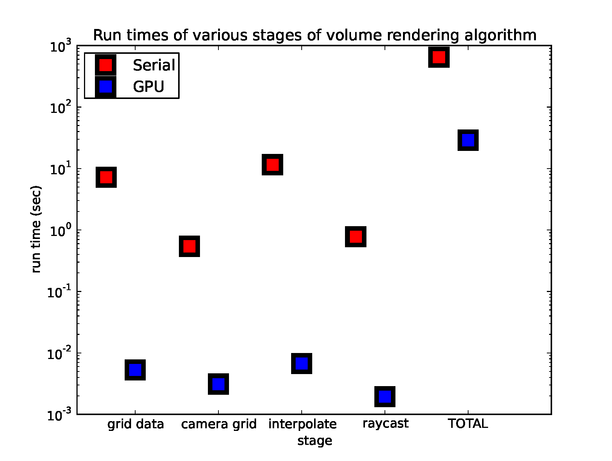
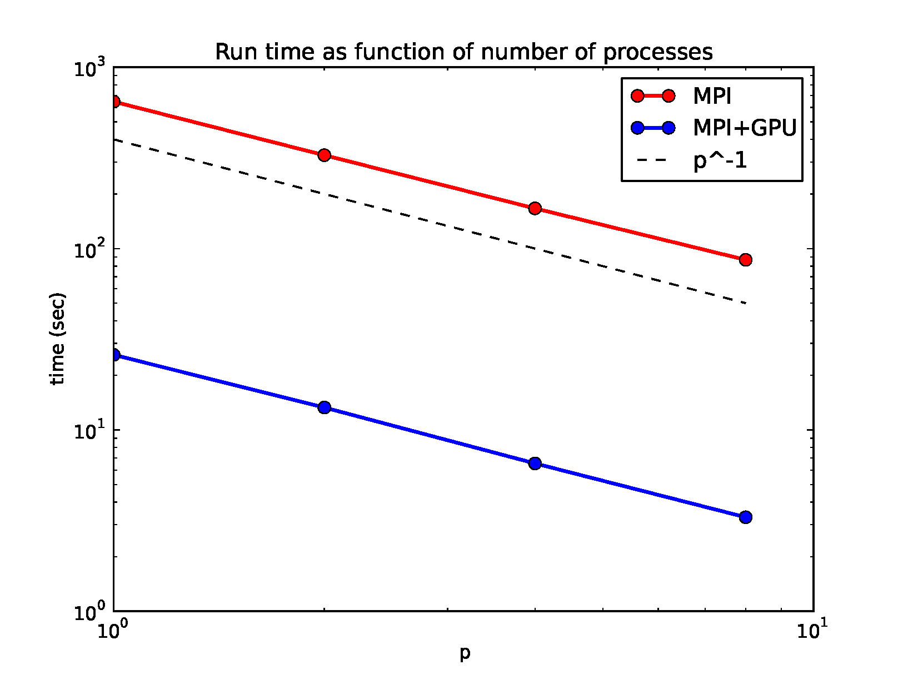
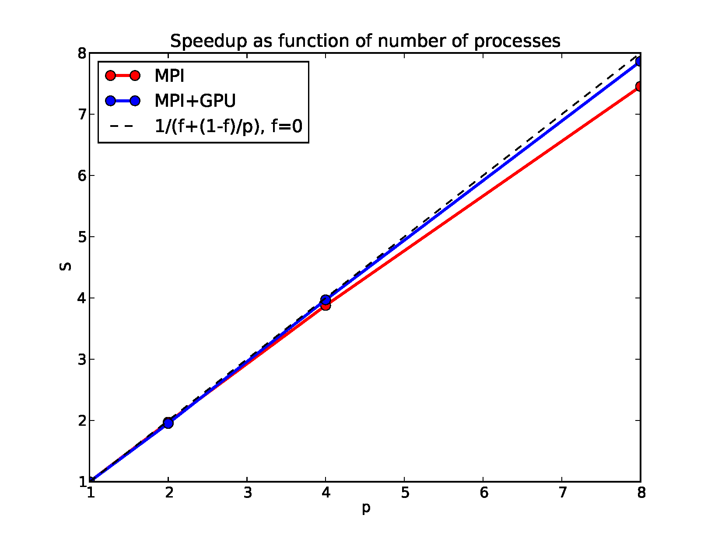
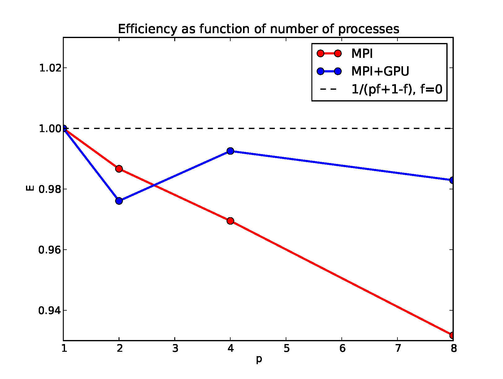
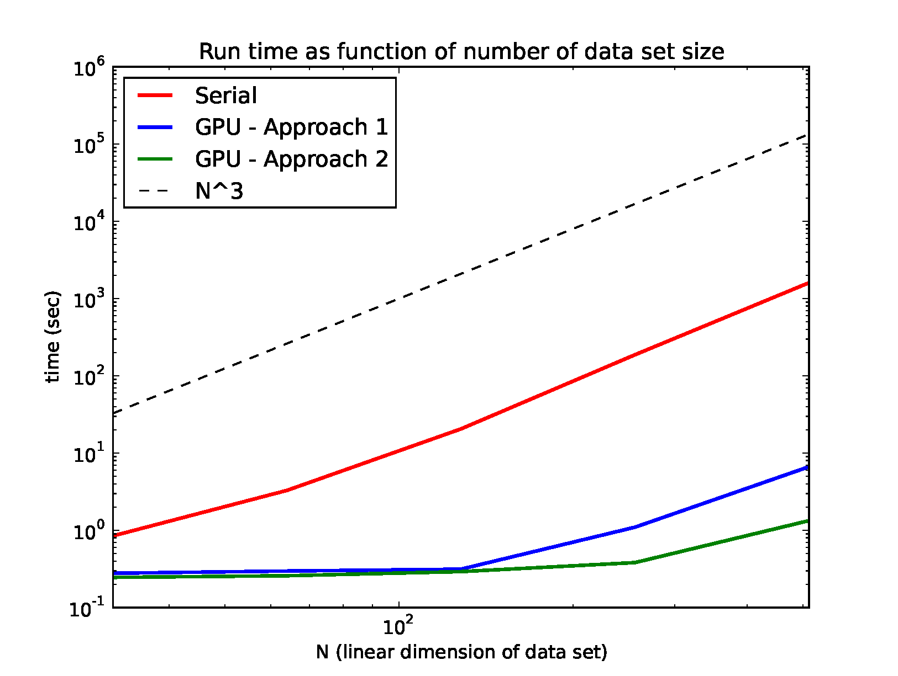

1Comparison of Raycasting Stages between GPU and Serial
Here we compare the different stages of the serial code to GPU kernels of the stages of the algorithm (GPU Approach 1) for a fair comparison. We further boost our GPU algorithm by combining kernels (Approach 2) -- see bullet point 5. Shown is the time per frame it takes to grid the data, construct the camera grid, interpolate data values along rays, and compute the raycasting for a sample data set. The serial version uses Numpy's built-in nearest neighbour interpolator while the GPU algorithm uses the cubic spline. The interpolation stage is the most expensive of the four stages. We also show the total time it takes to create a movie of 24 frames in the final column. We see that the GPU is faster than the serial code by more than a factor of 1000 in some of the stages. The creation of the movie for the GPU algorithm is dominated by grabbing the image from the GPU at the end and storing it as a numpy array to be plotted.

2MPI scaling
We validate that our algorithm scales strongly with the number of processes. We use MPI to distribute the calculation of the frames across a GPU cluster and in the end the root processor stitches the frames together into a single movie. No communication is required for the calculation of the frames since they are independent. The speedup is equal to the number of processes used and the efficiency is very close to 1. This is true for parallelizing both the serial and GPU version of the code with MPI. We note that using a single GPU is more efficient than running our implementation of the serial code on tens of MPI processors.



3Scaling with Size of Data Set
Here we show how the serial algorithm and the GPU algorithm (approaches 1 and 2) scale with the size/resolution of the data set. The serial algorithm asymptotes to \(N^3\), where \(N\) is the linear dimension of the 3D data set, quite early because every step of the algorithm scales with the number of data points. A large chunk of the algorithm is embarrassingly parallel and the GPU parallelizes this. We see that the total time is flat for small data sets. For large data sets, the GPU time does increase, because the time it takes to send and receive the data to the GPU memory scales with the number of data points. The calculations scale as the linear dimension of the data since this is proportional to the length of the ray. GPU approach 2, which is computation-heavy is much faster than GPU Approach 1, which uses more threads to do the interpolation step completely in parallel (rather than serially at each point along the traversing raypath) but requires storing these in memory.
